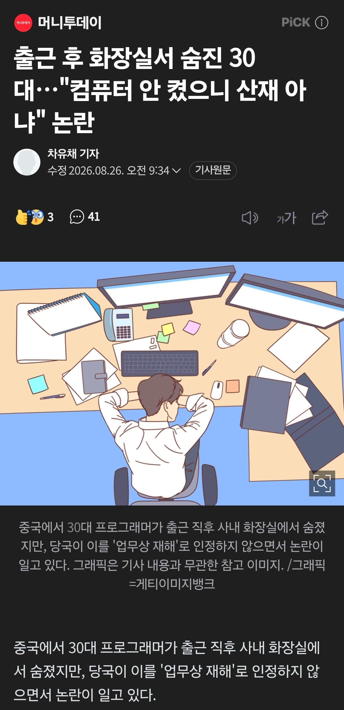
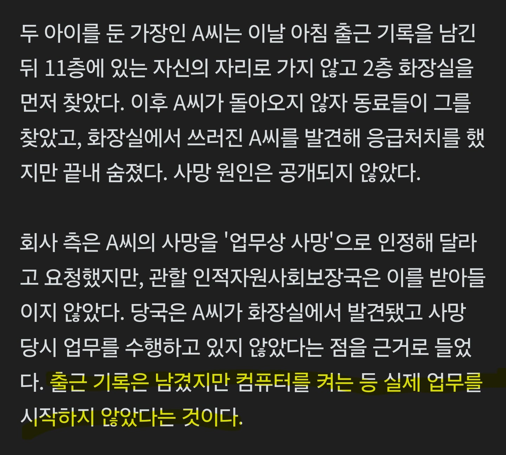

https://n.news.naver.com/article/008/0005404763?ntype=RANKING


https://n.news.naver.com/article/008/0005404763?ntype=RANKING


우리나라는 출근중이거나 퇴근중에도 특이사항 없으면 업무중으로 치지 않나
ㅇㅇ 출근 첫날 교통 사고 난 직원있었는데 산재처리해줬음. 이런건 산재 요율 안올라가더라. 이 때 첨 알았었는데
와 그분도 진짜 진땀뺐겠네 어케 출근 첫날 ㅋㅋㅋㅋㅋ
출근 첫 날부터 일주일 입원함. ㅋㅋ
한 10년 됐는데 아직도 사대보험 얘기하다가 가끔 웃음
내가 본 경우는 첫직장 옆팀 대리님 출근하다 사고 났는데 그날 비때문에 차막혀서 다른길로 돌아서 오다가 사고 났는대 평소 출근길하고 달라서 산재 인정 못받았음
그야 중국이니까
보통은 기업이 말장난하고 정부기관이 바로잡는 모양새 아니냐? 저기는 거꾸로네 ㅋㅋ
ㄹㅇ. 나도 마지막문단보고 ??? 했음 ㅋㅋㅋ
쟤네는 국가차원에서 노동자를 갈아버리고있어서 ㅋㅋ
폭염으로 일정 온도 넘어가면 작업중단해야하는데 중단하지 않게 하기위해 넘어가는순간 국가차원에서 온도발표 안해버리는애들임 ㅋㅋㅋ
난 읽으면서도 당연히 회사가 개수작 부렸겠지 하고 대충 넘겼는데
다시 보니까 회사가 요청하고 당국이 거부때린거네
뭥미
나도 당연히 회사가 또 쓰레기짓 하네 하고 보고 있는데 회사가 산재요청 국가가 거부 띠용...
뭔 미친소린가 했더만 중국이었네

컴퓨터부터 키고 화장실을 가야하는구나
진짜 피도 눈물도 없네
한 주에 얼마나 근무했을까? 90시간? 100시간?
한국은 출퇴근중에 사망해도 산재처리됨
심지어 퇴근해서 집에들어가서 비명횡사한경우 과로사로 판단되면 산재처리해준 사례도 있음
당연한거 해줘서 다행이다
중국에서
회사에서는 산재로 하려고 했나보네
회사가 산재요청한 것도 신기한데 정부가 ㄴㄴ한건 더 신기하네
난 회사에서 인정 안해준줄 알았는데 회사에서 산재해달라 한거였어..
중궈군요
저기는 인간이 너무많아서 부품처럼 쓰고버리고 하잖아
출퇴근길에도 산재인정되지 않나 했는데 외국이구나 ㅋㅋㅋ
사람의 마음이란게 없는기가
저긴 요새 사람 넘. 많이서 30중후반이면 명퇴후 이직이 거의 불가능하다던데
우리나라 산재기준은 엄청 널널한 편임
앞에 중국에서라고 붙여줘야 하는거 아니냐
우린 저러면 항의든 뭐든 난리가 나는데 .. 중국은 걍 그러려니 하는건 아니겠지 ..?
중국 20년전만해도 칼퇴하고 야근하면 죽는단소리나왔었는데...
국가적으로 블랙기업 장려까지 할줄은 상상도 못했네 ㅋ
마지막 문단 어질어질하네
회사에서 업무 상 사망으로 인정해달라 하고
관할 기관에서 받아들이지 않았다
ㅋㅋㅋㅋㅋㅋㅋㅋ 내가 글을 잘못봤나 했다
중국에서 인간은 그저 부품일 뿐
중국에서'만'?
그래도 한국은 관리가 필요한 부품 정도로는 생각해
우리는 중국만큼 갈아버릴 scv가 음서요...
"진짜"부품 취급
시발회사에서 인정해달라는데 ㅋㅋㅋㅋㅋㅋㅋㅋ국가에서거절
뭔 병신같은 회사가 저 지랄하는거지? 했는데
중국이네 역시 ㅋㅋㅋㅋ
게다가 중국에서 회사가 정상인데 정부가 중국해버리네 으아 노동자들의 디스토피아 중국 ㄷㄷㄷ
판정 잔인하네
트레이딩하다가 충격먹고 심장마비 온건가
소중국 이란말 아껴써야겠다 진짜 중국은 차원이 달라달라
유사국가 수준
지금 업무강도는 중 > 일 > 한 인가??
일본은 한국에서 혼자 할 일을 3~4명에서 나눠서 함
중국